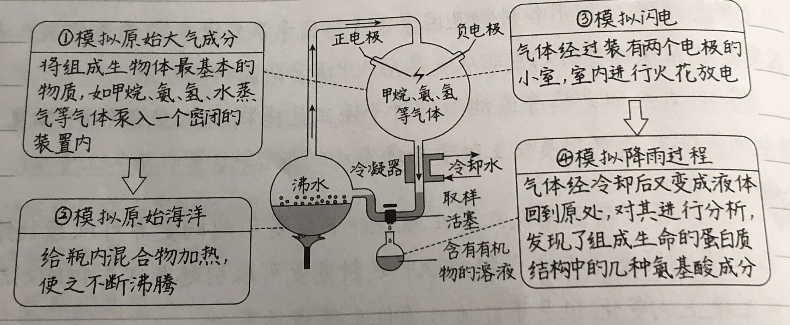

主页→生物目录→第三章-生命起源和物种进化-第一节-地球上的生命起源
第三章-生命起源和物种进化-第一节-地球上的生命起源
生命起源的基本条件
- 物质条件：原始大气，从火山中喷出来的气体（水蒸气、氢气、氨、甲烷、二氧化碳、硫化氢...)构成原始大气层
- 场所条件：原始海洋（原始大气层水蒸气在上升过程中冷却、凝结，变成雨水降落，形成海洋）
- 能量条件：宇宙辐射，闪电，紫外线，热能...
原始地球上尽管不能形成生命，但能产生构成生物体的有机物
米勒实验
此实验证明：在原始地球条件下，从无机物小分子物质形成有机物小分子物质是完全可能的
海洋化学起源说
- 原始大气在高温、紫外线以及雷电等自然条件的长期作用下，形成了许多简单的有机物
- 地球温度降低，有机物随液化的水蒸气降落到地面，汇聚到海洋中
- 原始的海洋中，各种有机物不断互相作用，逐渐形成原始生命